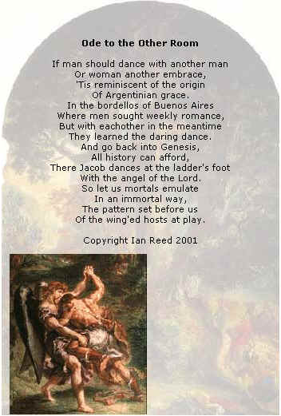

Argentine Tango Club at University of Toronto |
|||||||||
|
The
Argentine Tango Club of the University of Toronto, or at@ut for
short, was founded in the spring of 2000. We had our first dance in
October.
It is a UofT recognized campus group. It is also a group of friends who enjoy each other's company, dancing or just chatting. Access to our events and facilities is determined by by-laws and the discretion of the executive. The purpose of this club is to provide a venue for the novice dancer esp. University of Toronto students an environment to tango. We also welcome other members of the University of Toronto community and our guests.
|
 |